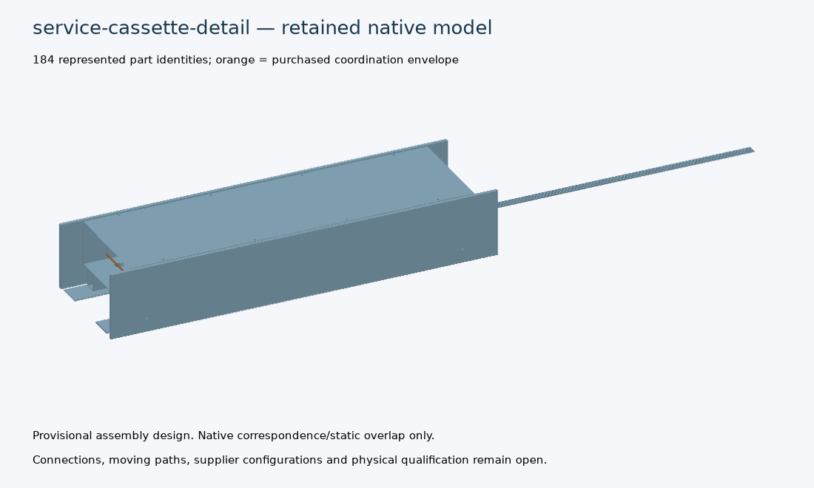
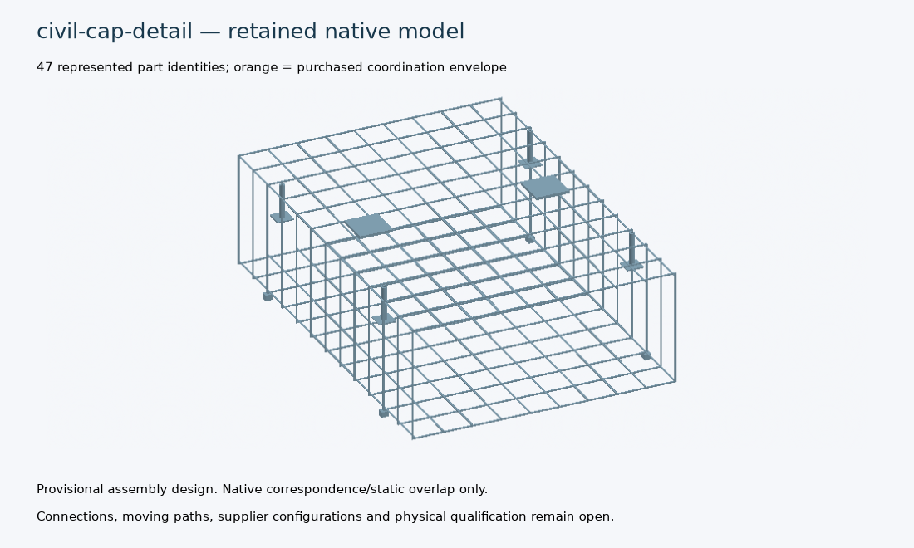
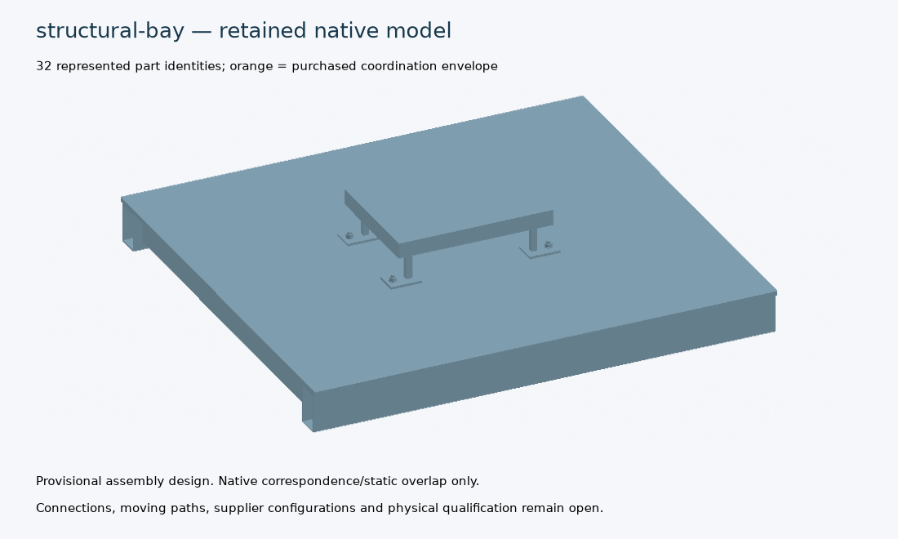
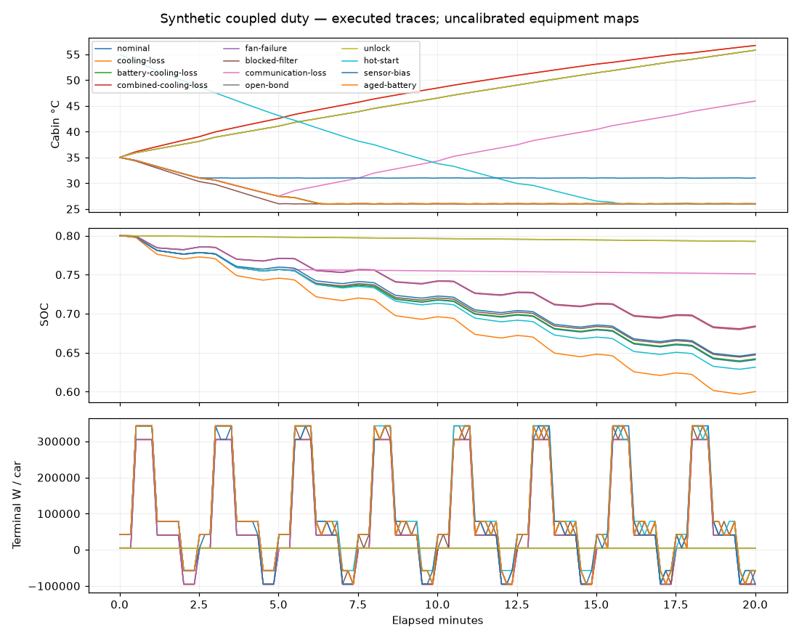

Provisional digital design and numerical evidence. Complete railway design, manufacturing and physical acceptance remain open.
تنفيذ إضافي لمهام خطة استكمال التصميم: نماذج تفصيلية ودراسات رقمية أولية. لا تمثل هذه النتائج قبولاً هندسياً نهائياً أو إذناً للتصنيع. تبقى اختبارات النماذج الأولية وتحريات التربة ومراجعة الجهات المختصة مطلوبة.
All 88 plan tasks, requirements, source registers and external requests | Electrical architecture and full coupled duty data (compressed) | Part-to-analysis/QA handoff
| Family | Native state | Parts | Failed / held checks |
|---|---|---|---|
| service-cassette-detail | passed | 184 | exact_supplier_mating_geometry, actual_vehicle_interface, protective_devices_and_derating, qualified_seal_clamping_force, physical_environment_and_assembly, qualified_frame_weld_local_buckling_fatigue, mount_preload_prying_member_resistance, adopted_shock_and_vibration_qualification |
| civil-cap-detail | passed | 47 | demould/early-age-cracking-strength, demould/qualified-insert-and-breakout, transport/early-age-cracking-strength, transport/qualified-insert-and-breakout, lifting/early-age-cracking-strength, lifting/qualified-insert-and-breakout, temporary-placement/early-age-cracking-strength, temporary-placement/qualified-insert-and-breakout, bar-development-and-cap-segment-joint, welded-link-ductility-and-confinement, shear-torsion-fatigue, crack-width-creep-shrinkage, jacking-head-flange-spreading, wind-seismic-ground-and-corridor |
| structural-bay | passed | 32 | local-floor-resistance, bolt-and-weld-resistance, shell-buckling, modal-acceptance, fatigue-spectrum, actual-equipment-loads, whole-car-bogie-interface, physical-joint-panel-correlation, detail/thread-stripping-and-selected-nut, detail/nonlinear-contact-and-prying, detail/local-shell-buckling-resistance, detail/actual-modal-transfer-acceptance, detail/fatigue-duty-and-qualified-SN, detail/qualified-preload-locking-and-WPS, detail/physical-joint-panel-correlation |
Revision bf24db6bbf9b97c62f8f203085a1b451bb70829889f36028f3985bac7515b5aa
Detailed definition | Cut/part schedule | Unexecuted QA (compressed) | Unissued inspection drawing

Editable FreeCAD | Compressed STEP | Compressed native-derived IFC | Compressed IDS requirements
Native triangles move through the proposed fixture path. This is a rigid kinematic illustration with declared groups detached; contact forces, flexible services and actual vehicle access remain unverified.
Revision c118dc4a7bbadb6f2964718f9c69ac01b6c2cf66358eb9733d702defdd5a8981
Detailed definition | Cut/part schedule | Unexecuted QA (compressed) | Unissued inspection drawing

Editable FreeCAD | Compressed STEP | Compressed native-derived IFC | Compressed IDS requirements
Revision c1257f49a3e81485a8f6873680b7b435184ba7ef991439990ae73b561c6c1d23
Detailed definition | Cut/part schedule | Unexecuted QA (compressed) | Unissued inspection drawing

Editable FreeCAD | Compressed STEP | Compressed native-derived IFC | Compressed IDS requirements
12 executed cases, with an independent RC control and time refinement. Synthetic battery/HVAC parameters test numerical behaviour; no supplier performance or comfort qualification is claimed.

| Case | Final cabin °C | Final SOC | Executed horizon | Numerical failures |
|---|---|---|---|---|
| nominal | 26.007 | 0.64098 | 1200.0 s | |
| cooling-loss | 56.726 | 0.68293 | 1200.0 s | |
| battery-cooling-loss | 26.007 | 0.64218 | 1200.0 s | |
| combined-cooling-loss | 56.726 | 0.68413 | 1200.0 s | |
| fan-failure | 55.814 | 0.68325 | 1200.0 s | |
| blocked-filter | 25.973 | 0.64711 | 1200.0 s | |
| communication-loss | 45.935 | 0.75116 | 1200.0 s | |
| open-bond | 55.814 | 0.79267 | 1200.0 s | |
| unlock | 55.814 | 0.79267 | 1200.0 s | |
| hot-start | 25.992 | 0.63137 | 1200.0 s | |
| sensor-bias | 31.018 | 0.64833 | 1200.0 s | |
| aged-battery | 26.007 | 0.60013 | 1200.0 s |
Conservation passing does not establish passenger comfort or equipment fitness. Cooling-loss and hot-start temperatures remain visible in the retained results.
Six material/location representatives, analytical inventory, independent metal bending controls and native owned-section exhibits. Complete core/potting, fastenings, formed roofs and installed manufacturing qualification remain open.
Bent round-link and coupler schedules: bend radii, hook/coupler reservations, congestion checks, assembly sequence and unexecuted inspections. These alternatives have no curved native confirmation and are excluded from cap selection.
Controlled equipment quantity: thermal and gross installed-mass sensitivities both use 8 complete LV/ventilation cassettes per car. Exact instance locations, mass/inertia, harness and known duty schedules. Full equipment selection, refrigeration mass, host packaging and vehicle BOM remain open before system admission.